DISCOVER KAZAKHSTAN
Burabay
Explore the beautiful lakes of Borovoe and enjoy peaceful nature, fresh air, green forests, and stunning mountain views.
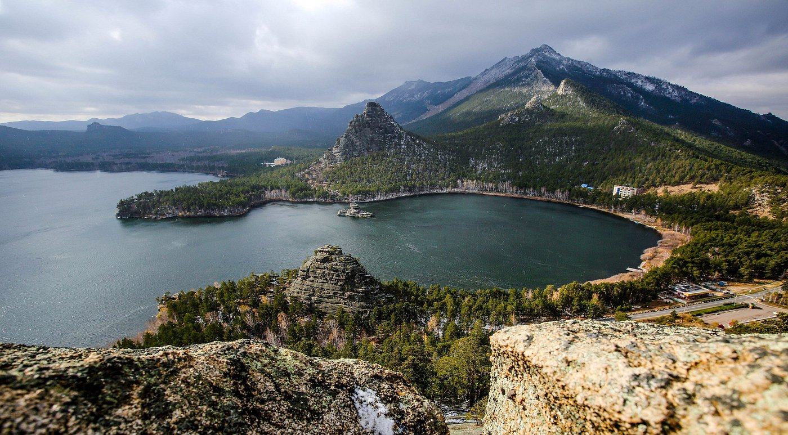
Welcome to Burabay
Burabay National Park is located in the Akmola Region of Kazakhstan. It is famous for its beautiful lakes, green forests, mountains and fresh air.
Burabay is often called the "Pearl of Kazakhstan" because of its unique landscapes and peaceful atmosphere. It is a popular destination for tourists and local people who want to relax and enjoy nature.
Nature and Landscape
The main attractions of Burabay are its beautiful lakes, pine forests and impressive rock formations.
- Beautiful lakes and clear water
- Pine forests and fresh air
- Mountains and unusual rock formations
- Hiking and walking trails
- Beautiful views and photo opportunities
Things to do
Visitors can enjoy many activities in Burabay:
- Explore the lakes and surrounding nature, including Lake Burabay and Bolshoye Chebachye.
- Go hiking in the mountains and forests and visit the Bolektau viewpoint.
- Visit famous natural attractions such as Zhumbaktas Rock, Okzhetpes Rock and Kenesary Cave.
- Explore the Imanov Waterfall and visit the Maral Farm.
- Learn about the history and legends of Burabay at Abylai Khan Glade.
- Enjoy beautiful views from the Ferris wheel and take photographs of the landscape.
- Visit the Multimedia Complex and enjoy modern entertainment.
- Have a picnic with friends or family and enjoy a peaceful weekend away from the city.
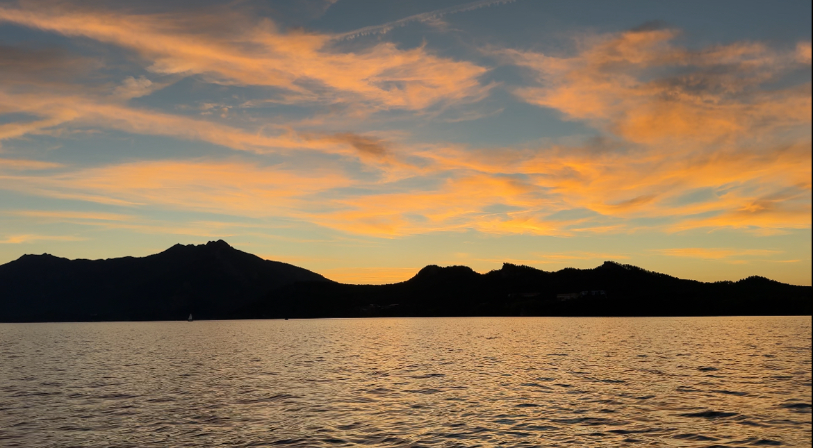
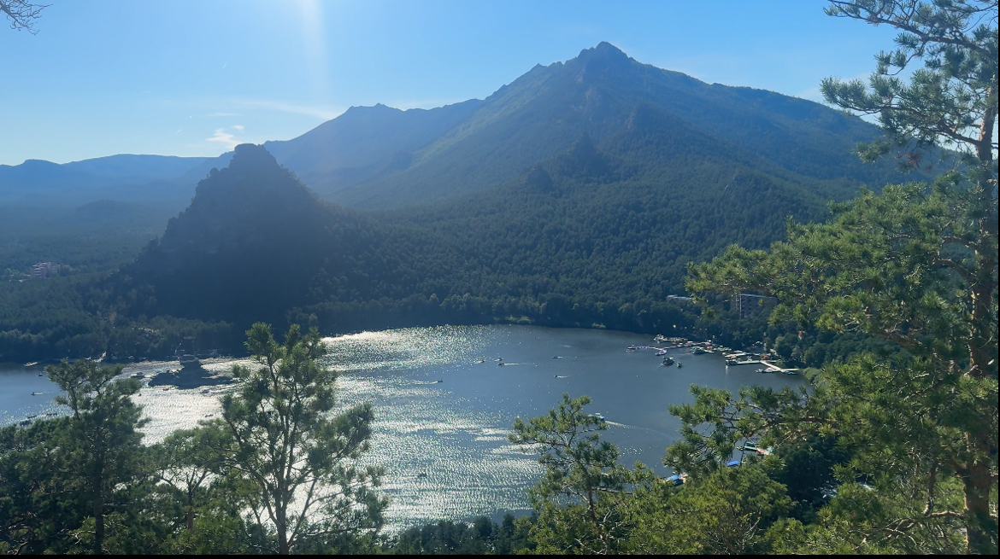
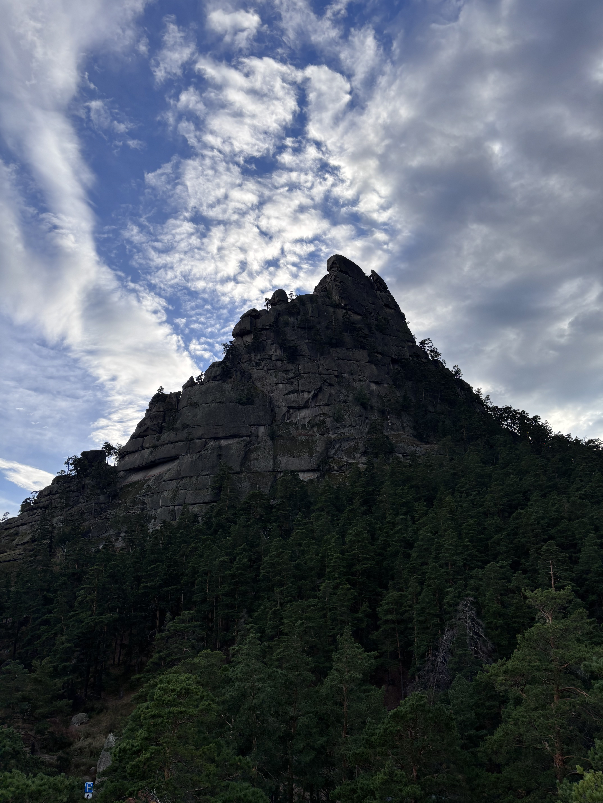
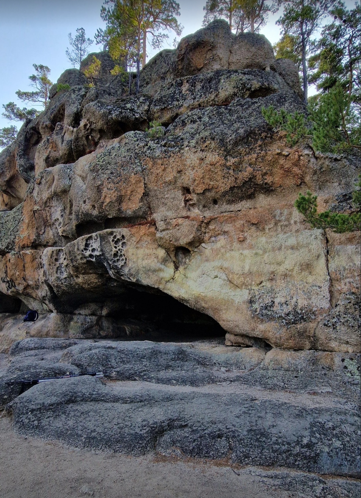
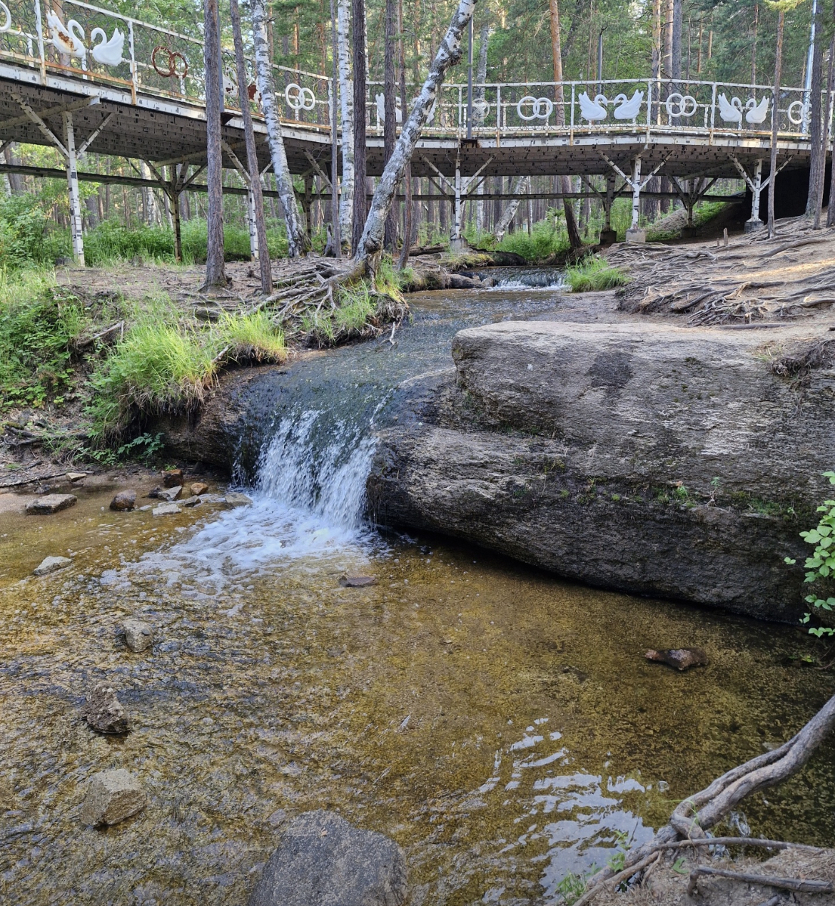
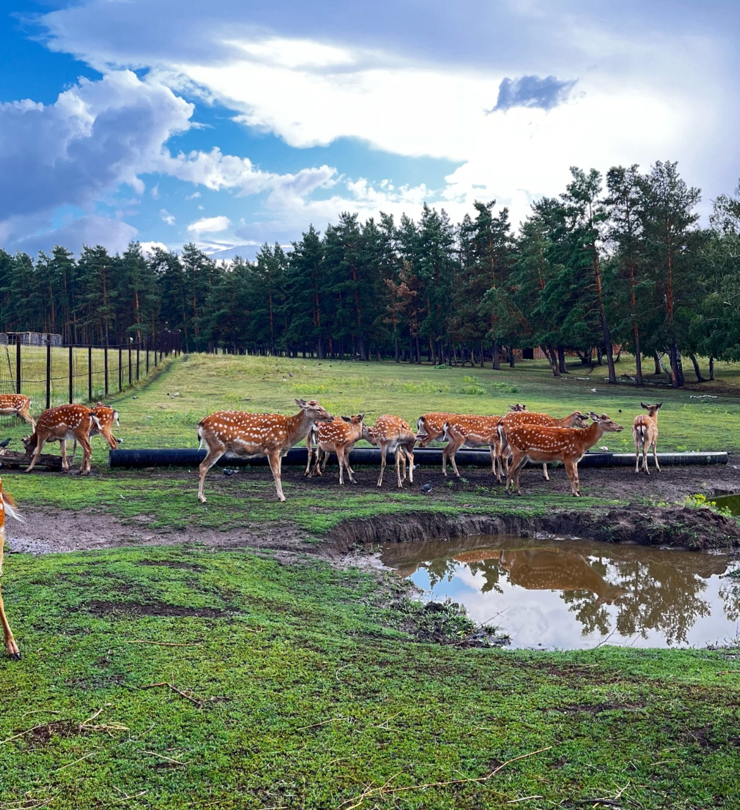
.jpg)
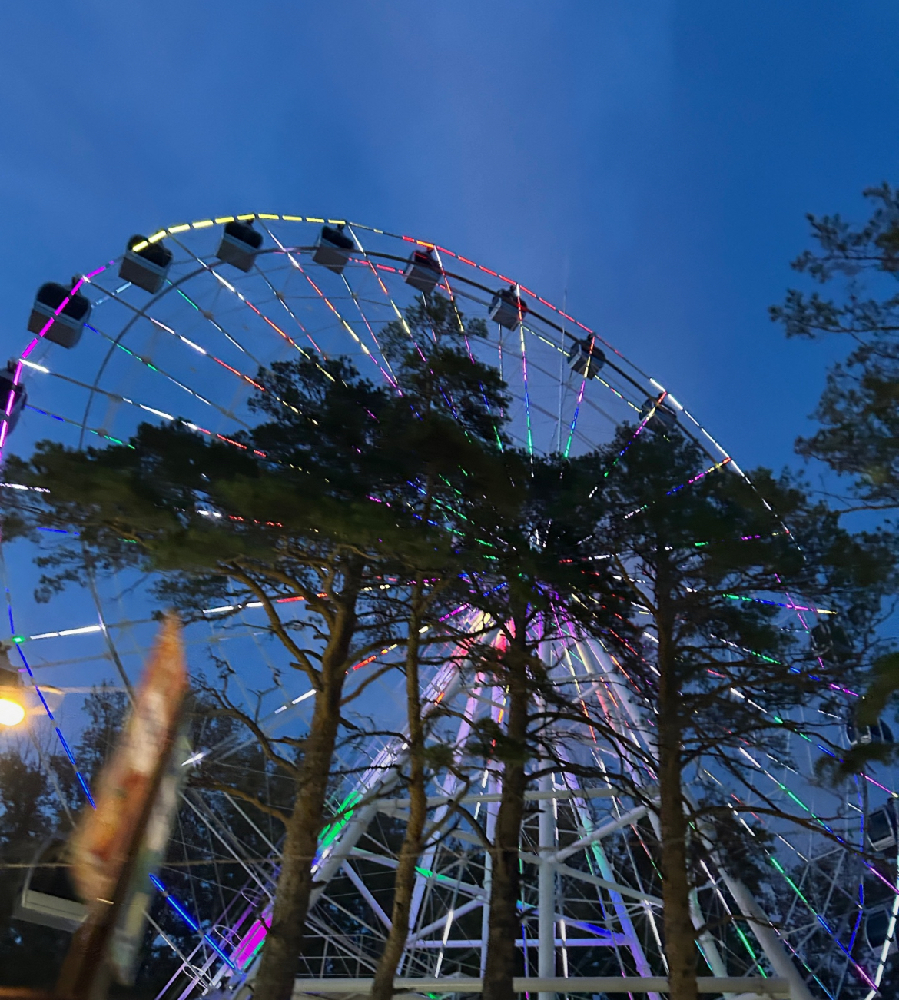
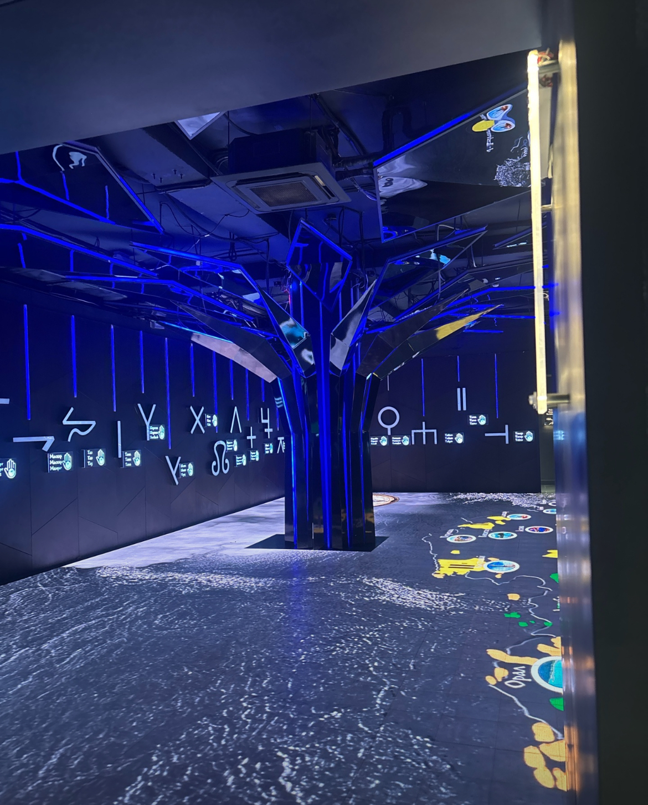
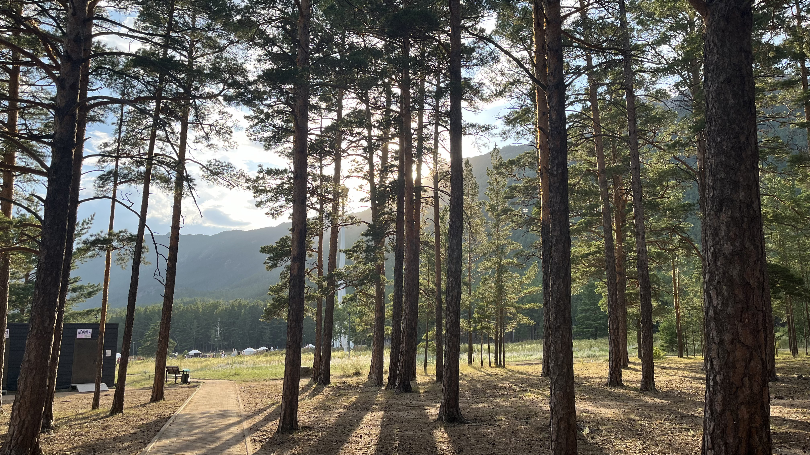
The Four Lakes of Burabay
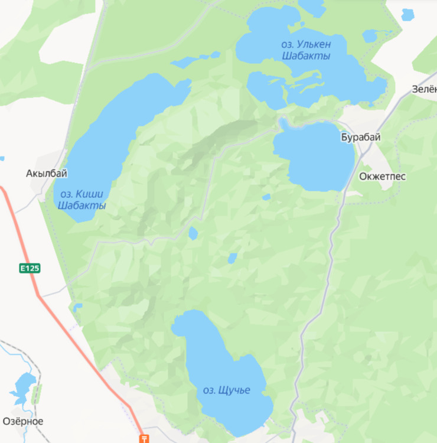
1. Lake Borovoe
Lake Borovoe is the most iconic and recognizable lake in Burabay. It is surrounded by pine forests, mountains, and rocky landscapes, with the famous Zhumbaktas Rock rising from the water. The lake covers about 10 km² and reaches a depth of around 7–8 meters. Its clear water and beautiful scenery make it one of the most photogenic places in the resort. In summer, visitors can rent boats and catamarans and sail directly to Zhumbaktas Rock.
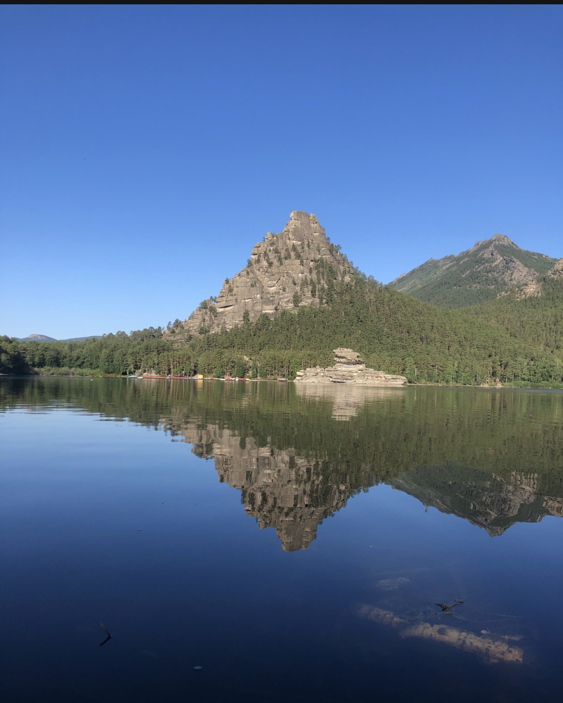
2. Big Chebachye Lake
Big Chebachye is the largest lake in the Burabay area and one of the most popular places for swimming and recreation. Its area is about 21–24 km², while its maximum depth reaches around 33–34 meters. The lake is known for its clean, clear water, sandy and pebbly shores, and beautiful mountain views. Many recreation centers and beach facilities are located nearby.
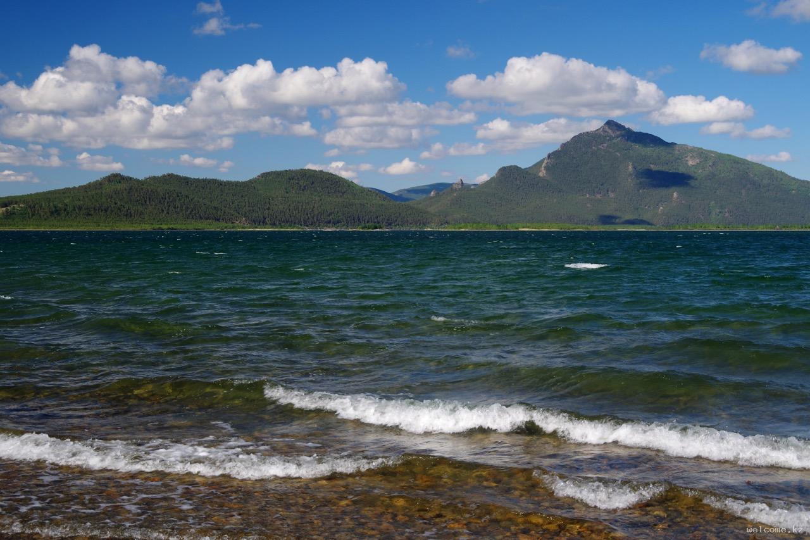
3. Small Chebachye Lake
Small Chebachye is a peaceful lake surrounded by forests and beautiful natural landscapes. It is quieter than the larger lakes and is a good place for visitors who want to enjoy nature and relax away from crowded tourist areas.
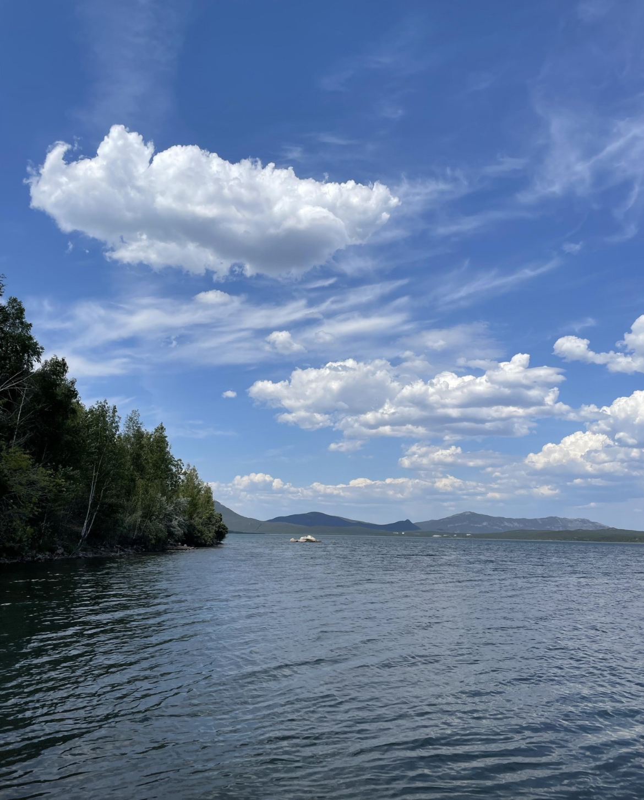
4. Lake Maybalyk
Lake Maybalyk is a smaller natural lake located in the Burabay area. It is surrounded by beautiful landscapes and is known for its peaceful atmosphere. The lake is suitable for visitors who enjoy quiet places, nature walks, and scenic views.
Why Visit Burabay?
Burabay is a great destination for people who love nature and outdoor activities. It offers beautiful scenery and many opportunities to spend time with friends and family.
Whether you want to hike, take photographs, explore nature or simply relax, Burabay has something for everyone.
Accommodation, Food & Tourist Facilities
Burabay is a well-developed resort destination with a wide range of accommodation, dining, and tourist services. Visitors can choose from hotels, resorts, guest houses, cottages, and glamping sites depending on their budget and travel style.
Where to Stay
Tourists can find comfortable hotels and resort complexes, as well as guest houses and cottages for a more private stay. Many accommodations are located close to the lakes and main tourist attractions, making it easy to explore the area.
Where to Eat
Burabay has many cafes and restaurants where visitors can enjoy both popular international dishes and traditional Kazakh cuisine. Restaurants can be found in hotels, near the lakes, and in the main resort areas, making dining convenient during a busy day of sightseeing.
Tourist Facilities
The resort also offers a variety of activities and services,including boat and catamaran rentals, guided excursions, walking and cycling routes, viewpoints, and other outdoor activities. This makes Burabay convenient for both relaxing holidays and active trips.